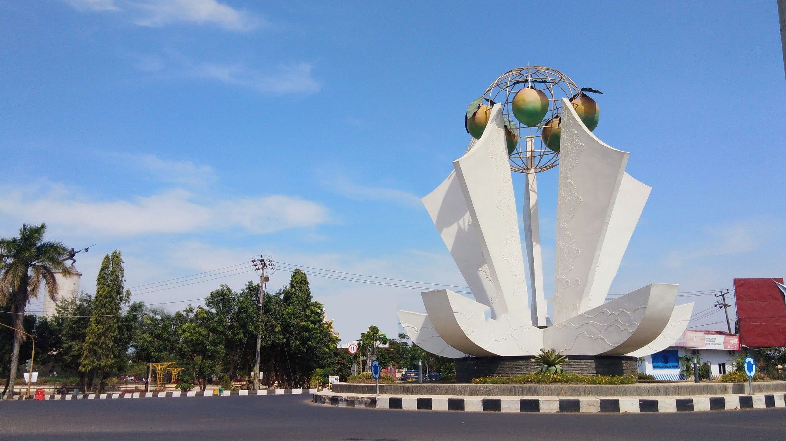
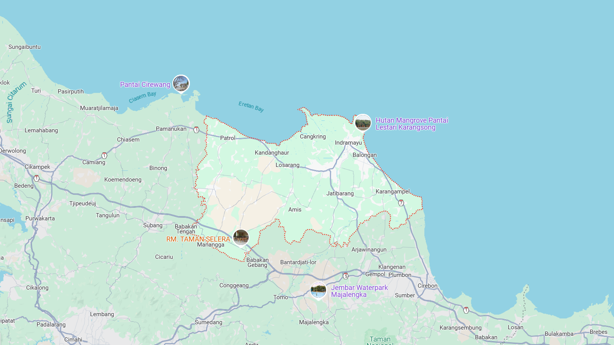
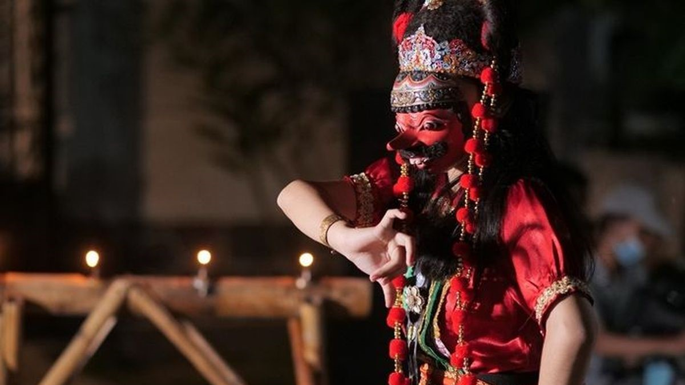
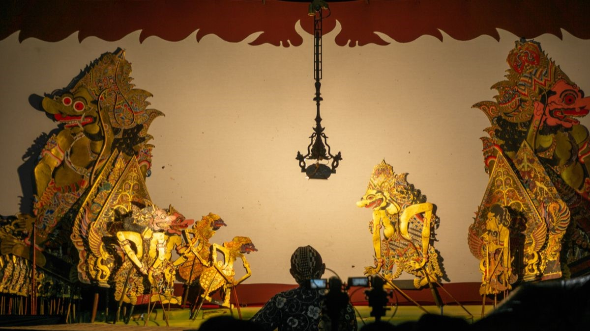
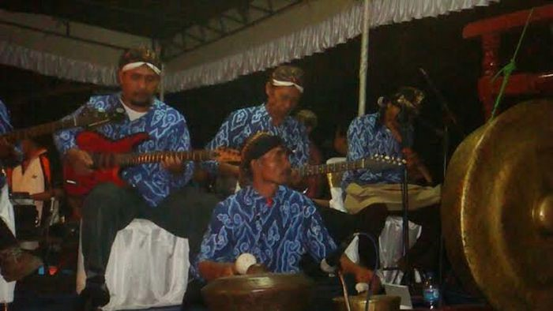

Sejarah

Nama lama dari Indramayu adalah Kesultanan Dermayu dikenal juga dengan sebutan Dermayu. Dermayu didirikan oleh
Raden Ali Wirasamudra (aria wiralodra) pada tahun 1478
dan secara sah berbentuk Kerajaan Islam Dermayu pada 27 Oktober 1527 atas dasar pengakuan dari Raja Arya Damar
Penguasa Kerajaan Palembang dan catatan lama dari Keluarga Pendiri Indramayu di Kepemerintahan Indramayu.
Nama Dermayu diambil dari dua Kata, seperti Darma merujuk pada agama Khonghucu yang dianut oleh penduduk lama
Indramayu abad ke 14 hingga 15 masehi sebelum Kerajaan Islam Dermayu didirikan.
Nama Dermayu digunakan sebagai nama Kerajaan, dikarenakan penduduk Indramayu pada masa lalu adalah penduduk
Tionghoa dan termasuk desa tertua yang dihuni oleh masyarakat Indramayu setelah Gumi Hwang dan Junti.
Sedangkan nama Indramayu adalah bentuk Karesidenan yang berdiri pada tahun 1890 oleh Raden Purbadinegara I.
Ini terjadi pasca Kerajaan Dermayu runtuh ditahun 1776 dan dibangkitkan kembali oleh Raden Purbadinegara I
tahun 1890 dan setelahnya Raden Purbadinegara II (Resident Tionghoa Indramayu) untuk pertamakalinya menjabat.
Geografis

Secara geografis, Kabupaten Indramayu berada pada 107"51'-108"36' Bujur Timur dan 6"15'–6"40' Lintang Selatan.
Wilayahnya terletak di bagian utara Provinsi Jawa Barat yang berbatasan langsung dengan Laut Jawa. Kabupaten
Indramayu berjarak sekitar 52 Km barat laut Kota Cirebon, 144 Km dari Kota Bandung melalui Sumedang serta 205
Km dari Jakarta ke arah timur. Seluruh wilayahnya merupakan dataran rendah hingga pesisir. Ada sebagian daerah
yang memiliki perbukitan terutama di perbatasan Kabupaten Sumedang yaitu Dusun Ciwado Desa Cikawung, Kecamatan
Terisi, dan sebagian wilayah Sanca, Kecamatan Gantar.
Budaya
Seni dan budaya di Indramayu merupakan akulturasi dari budaya Jawa Indramayu, Tionghoa, dan Sunda bagian
wilayah utara, kebudayaan yang tumbuh dalam masyarakat Indramayu menjadi bentuk ekspresi nyata terhadap
akulturasi tiga kebudayaan yang berbeda.
Organ Tunggal
Kesenian Indramayu salah satunya adalah kesenian Organ Tunggal, yakni pentas musik di atas panggung dengan
menggunakan Organ. Organ Tunggal ini biasanya dipentaskan hampir di setiap acara, seperti acara tujuh
belasan, juga pada hari raya keagamaan seperti Hari Raya Idul Fitri dan Idul Adha, meskipun lebih sering
dipentaskan pada acara-acara hajatan, seperti hajatan pernikahan dan khitanan. Selain di atas panggung,
kesenian musik organ ini juga dipentaskan secara berkeliling kampung pada saat-saat tertentu, seperti pada
Bulan Ramadhan. Dua di antaranya yang cukup ternama beserta artisnya adalah: Organ tunggal Rolani Electone
dengan Aas Rolani dan organ tunggal Puspa Kirana dengan Dewi Kirana. Tidak jarang grup-grup ini mendapat job
manggung di luar Indramayu, bahkan lintas provinsi.
Tari Topeng

Seni tradisional lainnya adalah seni tari topeng kelana. kesenian ini merupakan kesenian asli daerah
Yogyakarta termasuk Indramayu. Tari Topeng Indramayu adalah salah satu tarian topeng yang memiliki perbedaan
dengan tari topeng asal Yogyakarta yang memiliki topeng mata besar, sedangkan tari topeng Indramayu topeng
mata sipit.
Wayang Kulit

Seperti masyarakat Jawa pada umumnya, kesenian Wayang masih kental melekat pada masyarakat Indramayu. Wayang
Kulit Indramayu sebenarnya tak ada bedanya dengan wayang kulit Jawa, perbedaanya hanya terletak pada bahasa
yang digunakannya, yaitu Bahasa Jawa Indramayu atau yang biasa dikenal dengan basa dermayon yang khas dalam
tuturannya, baik lakon maupun sempal guyonnya.
Tarling

Tarling adalah seni musik dan lagu yang pada awalnya ditampilkan dalam bentuk nyanyian (kiser) yang diiringi
oleh gitar dan suling saja. Penamaan Tarling sendiri merupakan Akronim dari Gitar (Tar) dan Suling (Ling).
Sejalan dengan perkembangan zaman, kesenian Tarling mengalami perkembangan dan perubahan yang cepat. Saat
ini Tarling sudah dilengkapi dengan alat-alat musik yang modern. Kendatipun demikian Tarling klasik masih
banyak diminati oleh penduduk.